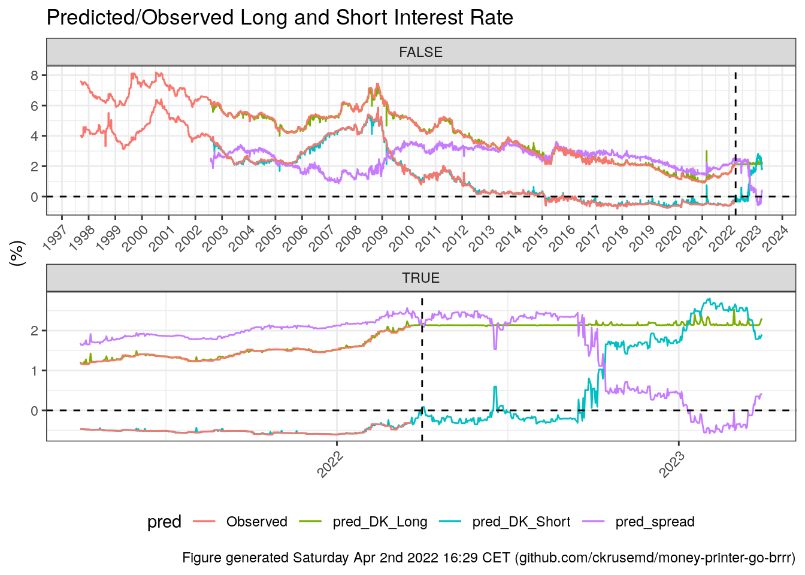
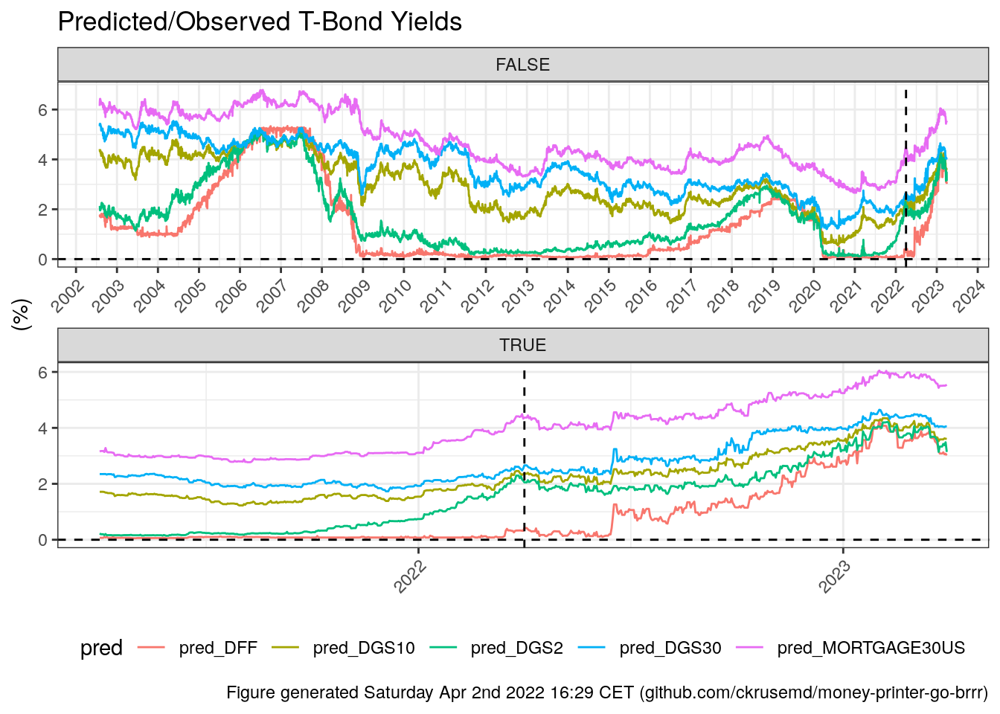
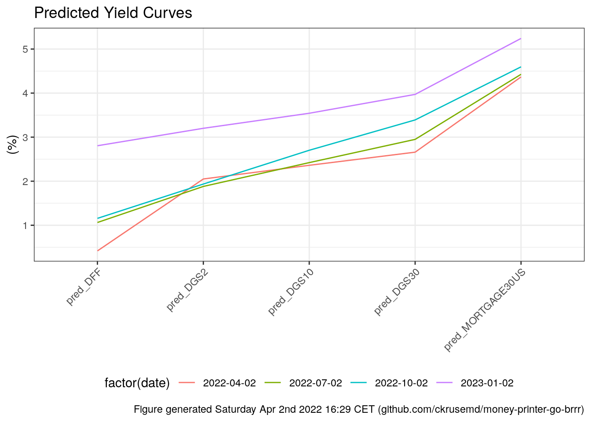
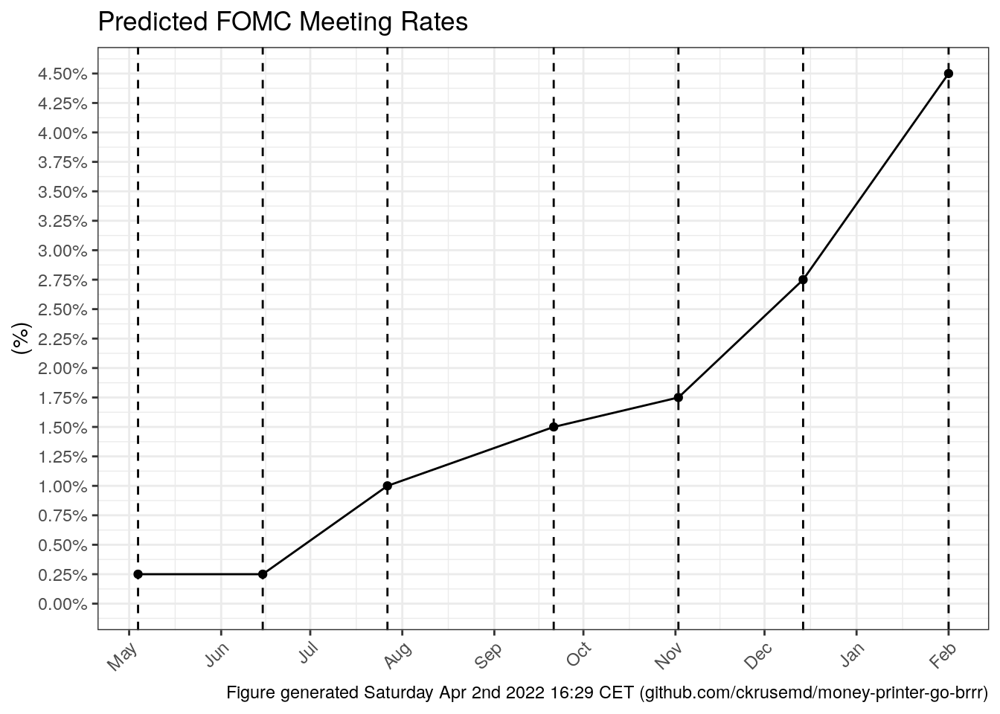

1
Money Printer Go BRRR
2
FED
2.1
Treasury Bonds
2.1.1
Previous 12 Months
2.2
Yield Curve
2.3
Treasury Bonds Spreads
2.3.1
30-Year Mortgage to 30-Year T-Bond
2.3.2
2-Year to 10-Year T-Bond
2.3.3
6-Month to 30-Year Mortgage Spread
2.4
Yield Checkboard
3
Denmark Mortgage Bonds
3.1
Short, Long + Spread
3.1.1
Previous 12 Months
3.1.2
Short w/ ECB Rate Changes
3.2
Parabolic Support and Resistance
3.3
Historic 5-Year Forward Rate Increases
3.4
Lowest Long Yield and Smallest Spread
3.5
Best Time to Go Fixed
4
Predict US Interest Rates
4.1
Danish Short and Long
4.2
Predicted Yield
4.3
Future Yield Curves
4.4
Future FED FOMC Meeting Rate changes
5
Byggekonjunktur
5.1
Flats
5.2
Rolling sums of changes
5.3
Backlog
5.4
Construction Employment
6
ECB Yield
6.1
Yield Curve
6.2
Spreads
6.2.1
2s10s
6.3
Predict Yield
6.4
Extrapolate
6.5
ECB to Danish Yields
ECB Yields
4
Predict US Interest Rates
4.1
Danish Short and Long

4.2
Predicted Yield

4.3
Future Yield Curves

4.4
Future FED FOMC Meeting Rate changes
